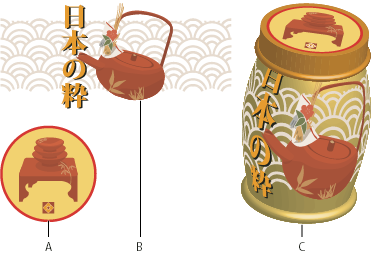

Map artwork to a 3D object
Every 3D object is composed of multiple surfaces. For example, an extruded square becomes a cube that is made of six surfaces: the front and back faces, and the four side faces. You can map 2D artwork to each surface on a 3D object. For example, you might want to map a label or text onto a bottle-shaped object or simply add different textures to each side of an object.

- A.
- Symbol artwork
- B.
- Symbol artwork
- C.
- A and B mapped to 3D object
You can only map 2D artwork that’s stored in the Symbols panel to a 3D object. Symbols can be any Illustrator art object, including paths, compound paths, text, raster images, mesh objects, and groups of objects.
When mapping 3D objects, consider the following:
-
Because the Map Art feature uses symbols for mapping, you can edit a symbol instance and then automatically update all surfaces that are mapped with it.
-
You can interact with the symbol in the Map Art dialog box with normal bounding box controls to move, scale, or rotate the object.
-
The 3D effect remembers each mapped surface on an object as a number. If you edit the 3D object or apply the same effect to a new object, there may be fewer or more sides than the original. If there are fewer surfaces than the number of surfaces defined for the original mapping, the extra artwork will be ignored.
-
Because a symbol’s position is relative to the center of an object surface, if the geometry of the surface changes, then the symbol will be remapped relative to the new center of the object.
-
You can map artwork to objects that use the Extrude & Bevel or Revolve effect, but you can’t map artwork to objects that only use the Rotate effect.